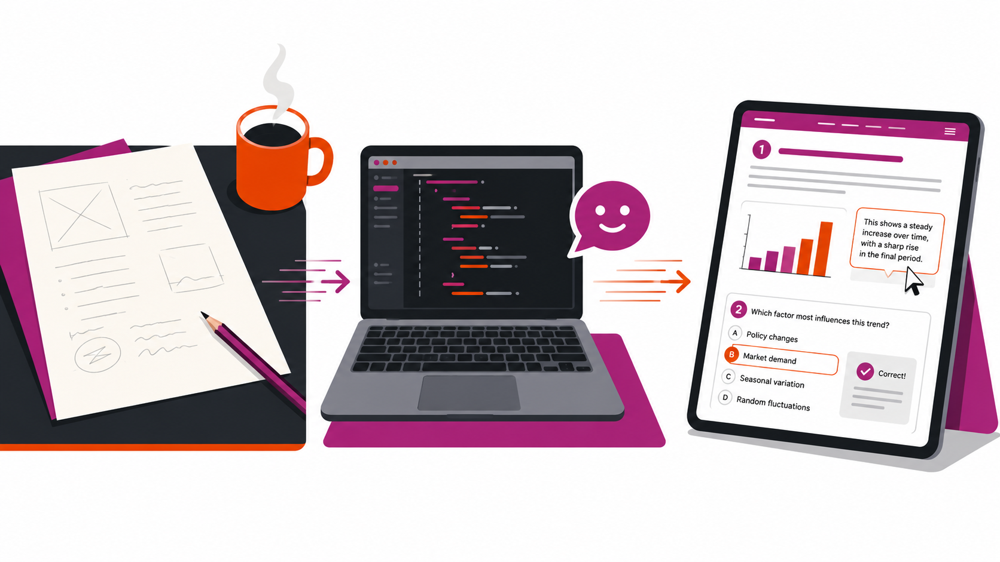
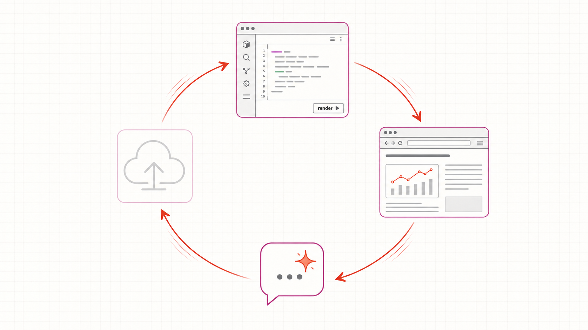

—
title: “Interaktive Skripte mit KI erstellen” subtitle: “Workshop · TH Köln · 11.05.2026” author: “Prof. Dr. Roman Bartnik” format: revealjs: theme: [default, ../styles.scss] slide-number: c/t chalkboard: true incremental: false logo: ../images/th-koeln-logo.png footer: “Workshop „Interaktive Skripte mit KI erstellen” transition: fade width: 1280 height: 720 title-slide-attributes: data-background-color: “#ffffff”
Vorstellung & Motivation
- Heute: Sie bauen Ihr eigenes interaktives Skript — live im Netz
- Wer ich bin: Roman Bartnik, Prof. für Supply- und Projektmanagement, TH Köln
- Warum jetzt: Quarto + KI-Tutor → die Schwelle ist so niedrig wie nie

Hier zwei Minuten Spannungsaufbau: erst die Behauptung, dass jeder das schafft, dann die vier Vorbilder als Beweis. Die Vorbilder sind keine Mahnung, sondern Erlaubnis: das ist machbar, und morgen sieht Ihr Skript ähnlich aus. Beim letzten Punkt kurz darauf hinweisen, dass das eigene KI-als-Hilfe-Skript auch in einem solchen Workshop entstanden ist.
Vorstellungsrunde
Pro Person 90 Sekunden, drei Punkte:
- Hochschule und Lehrgebiet (wo, was unterrichten Sie?)
- Was Sie heute mitbringen (haben Sie Quarto / R / GitHub schon mal angefasst? Was nutzen Sie sonst zum Schreiben?)
- Warum sind Sie hier? (welches konkrete Skript haben Sie im Kopf — und was hindert Sie bisher?)

Reihenfolge im Uhrzeigersinn beginnen, mich selbst als erste*n. Bei jeder Person die dritte Antwort kurz spiegeln: „Ah, ein Skript zum Operations-Management — daran denken wir heute Nachmittag noch zurück.” So entsteht im Raum eine Mini-Karte der Anwendungsfälle, die wir später beim Showcase wieder aufnehmen.
Drei Phasen heute
- Phase 1 — Vormittag: RStudio + KI-Tutor, alles lokal
- Phase 2 — früher Nachmittag: Zotero kommt dazu, immer noch lokal
- Phase 3 — später Nachmittag: GitHub Pages — live im Netz

Hier ist der entscheidende Architektur-Punkt: gestaffelte Werkzeug-Hinzunahme statt alles auf einmal. Das senkt die kognitive Last (Mayer 2021), ohne den Erfolgsmoment des „live im Netz” zu opfern — der kommt am Tagesende, nicht am Vormittag. Wer in Phase 1 hängt, kann trotzdem Phase 3 erleben.
Der Workflow
- Schreiben in RStudio (
.qmd-Datei) - Rendern mit
quarto renderoder Knopf - Ansehen in der Browser-Vorschau auf
localhost - Fragen an den KI-Tutor im zweiten Tab
- Veröffentlichen in Phase 3 mit
Commit → Push

Dies ist der Kreislauf, in den die Teilnehmenden den ganzen Tag eintauchen: Schreiben, Rendern, Ansehen, Fragen — und der Tag endet einmal mit Veröffentlichen. Wenn jemand morgen nur einen Satz vom Workshop mitnimmt, ist es dieser Vier-Schritt-Loop.
Los geht’s
Letzte Folie: Nur die URL, weiße Schrift auf TH-Rot. Pause aushalten, bis alle die URL geöffnet haben — der Wechsel von Folien zu interaktivem Skript ist der eigentliche Workshop-Start.
Bild-Generierungs-Prompts
Diese Folie ist nicht Teil des Vortrags. Sie sammelt die vier Bild-Prompts zum späteren Generieren mit DALL·E, Midjourney, Imagen oder einem ähnlichen Werkzeug. Pro Folie ein Prompt; bei der Generierung Bilder als images/intro-motivation.png, images/intro-vorstellungsrunde.png, images/intro-phasen.png, images/intro-workflow.png ablegen.
Folie 2 — Motivation (intro-motivation.png)
A clean editorial vector illustration in three horizontal panels showing the metamorphosis of an academic teaching script. Left panel: a blank sheet of paper with faint pencil sketches and a coffee cup beside it. Center panel: an open laptop with a stylized code editor on screen and a small friendly chat bubble icon floating beside the laptop, suggesting an AI tutor companion. Right panel: a tablet held at a slight angle showing the same content transformed into a published web page with subtle interactive elements visible — a small bar chart, a quiz card, a hover tooltip. Color palette restricted to warm reds (#c81e0f), magenta (#b43092), orange accents (#ea5a00), with charcoal grays and paper-white background. Style: editorial illustration in the spirit of The New York Times Sunday Review, no photographic textures, no realistic faces. Subtle horizontal motion lines between the panels suggest progression from blank page to live publication. 16:9 aspect ratio, high contrast, suitable as keynote-slide background, transparent or white background.
Folie 3 — Vorstellungsrunde (intro-vorstellungsrunde.png)
A clean editorial vector illustration of a collegial round-table introduction at an academic workshop. Five abstract human figures sit around a circular wooden table, viewed from a slight elevated angle. The figures have no facial features — just silhouettes — but each is distinguished by a small accessory or prop: one with a coffee mug, one with an open notebook, one with a laptop, one with glasses on top of head, one with a backpack on the chair. Above each figure, a small thought bubble shows a stylized icon representing a different academic discipline: a beaker, a balance scale, a cogwheel, a line graph, an open book. Atmosphere is warm and collegial, suggesting curiosity and exchange rather than formality. Soft afternoon light, subtle wood-grain texture on the table surface. Color palette: warm reds (#c81e0f), magenta (#b43092), orange accents (#ea5a00), charcoal grays, on a paper-white background. Style: editorial, dignified, modern. 16:9 aspect ratio.
Folie 4 — Drei Phasen (intro-phasen.png)
A clean diagrammatic vector illustration showing three stacked horizontal bands that represent three phases of a workshop day. Top band: a single laptop with a stylized code editor open, plus a small chat bubble icon next to it (the AI tutor). Middle band: the same laptop, now connected by a thin curving line to a stack of books with a small library/citation icon (representing Zotero). Bottom band: the same scene, now extended with a globe icon and a small cloud, with a dotted line tracing from the laptop up to the cloud and out to the globe (representing publishing on the web). Each band has a very subtle background tint progressing through pale red, pale magenta, pale orange. No text inside the illustration — only icons. The composition reads top-to-bottom as growing scope without growing complexity. Color palette: warm reds (#c81e0f), magenta (#b43092), orange (#ea5a00), with neutral grays. Style: clean, modern, editorial-diagrammatic, inspired by information design principles à la Edward Tufte. 16:9 aspect ratio.
Folie 5 — Workflow (intro-workflow.png)
A clean technical vector illustration of a continuous four-node workflow loop arranged in a diamond pattern, connected by gracefully curving arrows showing circular flow. Top node: a stylized RStudio window with code visible and a small “render” button. Right node: a stylized browser window showing a rendered HTML page with a tiny chart inside. Bottom node: a small chat bubble icon with a subtle spark inside it, suggesting an intelligent AI tutor. Left node: a small upload-cloud icon (the publish step, slightly faded to suggest “later”). The arrows between nodes are gently animated-looking with subtle motion. The whole loop sits on a soft paper-white background with very faint grid lines, like graph paper. Color palette: warm reds (#c81e0f) for the main flow arrows, magenta (#b43092) for node borders, orange (#ea5a00) for the AI-tutor spark, charcoal grays for line weights and text. Style: clean, technical-illustrative, in the spirit of Tufte’s information design — no decorative clutter, every element carries meaning. 16:9 aspect ratio, suitable as slide background.
Diese „Hidden Slide” für mich selbst — beim eigentlichen Vortrag mit „o” vom Folienlauf ausgeschlossen oder einfach nicht durchgeklickt. Nach dem Bildgenerieren die vier PNGs in images/ ablegen, dann zeigen die Folien 2–5 oben die Bilder rechts neben den Bullets.